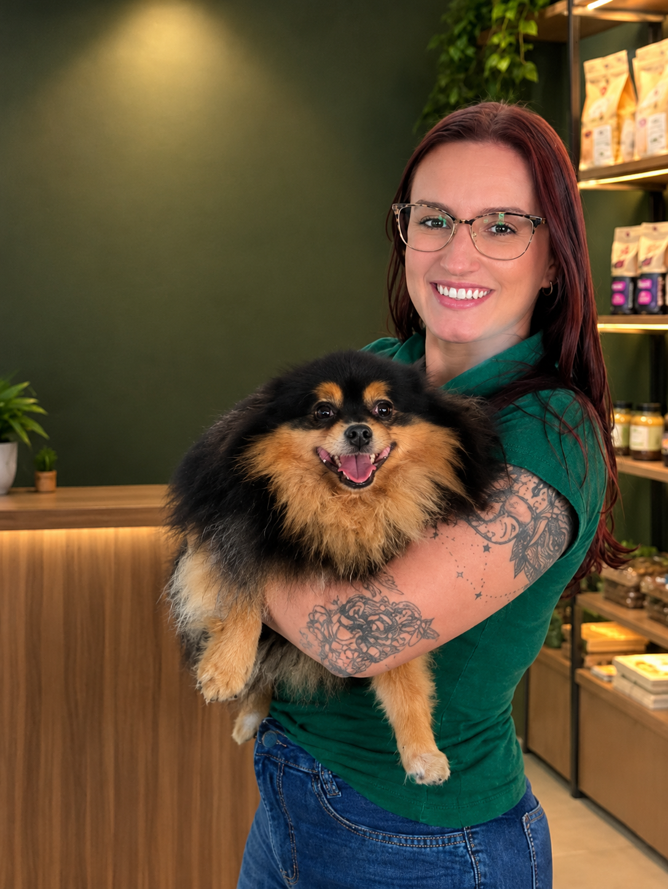

PROPRIETÁRIA • PET DOM’S
A responsável pela Dom’s
À frente da Pet Dom’s, ela representa o propósito de tornar a experiência dos cães mais acolhedora, segura e cheia de carinho. O trabalho da marca reúne creche e hotel para cães, banho e tosa e mordedores naturais.
Mais do que oferecer serviços, a Dom’s valoriza o cuidado nos detalhes e o respeito ao jeito de cada pet — porque eles são parte da família.
Conheça a rotina da Dom’s ↗ Esta apresentação usa informações públicas sobre a empresa. A biografia pode ser personalizada com nome, trajetória e formação confirmados pela proprietária.